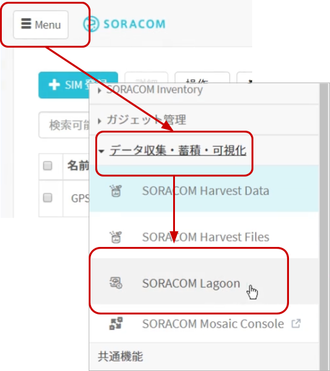

公開日: 2020年12月
レシピ難易度：★★☆☆☆
Arduino UNO 互換マイコンとセンサー10種がセットになった「Grove Beginner Kit」と、Arduino UNOでLTE-M通信が可能となる拡張ボード「LTE-M Shield for Arduino」がワンパッケージになった「IoTスターターキット for Arduino」で、仕事環境や家庭内の温湿度・気圧などを計測する「屋内環境計」を作ります。
全体の構成
使用する SORACOM サービス
- データ通信サービス SORACOM Air
- データ収集・蓄積サービス SORACOM Harvest Data
- ダッシュボード作成・共有サービス SORACOM Lagoon
本レシピを行うのに必要な時間、概算費用
本レシピは以下の通りです。
- 必要な時間: 約1時間30分
- 概算費用: 約10,000円
※ 概算費用: ハードウェアや SORACOM を始めとした各種サービスの概ねの費用 (税や送料などの付帯費用や無料枠適用は考慮しないものとしています)
このコンテンツの進め方
ページの内容を読み、また作業を行ったら右下の［Next］を押して次のステップへ進みます。また、［Back］を使って戻ったり、左のナビゲーションメニューでもページの移動が可能です。
左上の［×］を押してコンテンツを終了することができます。また、ページを開きなおすことで再開できます。ページのアドレスはブラウザの［履歴］メニューを利用してください。
本レシピを行うためには以下のものをご用意ください。
ハードウェア
品名 | 数量 | 価格 | 購入先 | 備考 |
IoT スターターキット for Arduino | 1 | 9,980円 | IoTスターターキット for Arduinoには「Grove Beginner Kit」「LTE-M Shield for Arduino」「SORACOM 特定地域向け IoT SIM / plan-D nanoSIM サイズ」が同梱されています。 | |
開発用パソコン | 1 | ― | ― | Arduino IDEによる開発環境が整っていること。 |
(必要な方のみ) USB 変換アダプタ | 1 | ― | ― | パソコンに USB Type-A ポートがない場合に準備してください。 1A 以上の電力が供給できるものを利用してください。(USB 3.0以上に対応していれば概ね安心です) |
※ 金額はレシピ作成時となります。ソラコムで販売している金額は税抜き・送料別です。その他は参考価格となります。
その他必要なもの
必要なもの | 費用 | 作成方法など |
SORACOM アカウント | 無料※ |
※ アカウント作成・維持の費用の料金です。
設置に利用したもの
本レシピで設置時に利用した部材です。必須ではありませんがご参考にお使いください。
品名 | 数量 | 備考 |
USB 型 AC アダプタ | 1 | Grove Beginner Kit への電源供給用です。1A以上供給できるものが望ましいでしょう。 |
LTE-M Shield for Arduino(以下、 LTE-M Shield) の上部は外すことができます。その上部の部品の裏面にあるSIMスロットへSIMを挿入した後、元に戻します。最後にアンテナを取り付けて終了です。

注意点
- SIMの挿入方法は、「カチ」という音がするまで奥に挿入してください。また取り外しはSIMを押し込むと「カチ」という音がしてSIMが取り出しやすい位置に出てきます。
- 再度部品を取り付ける際、ピンの位置がずれないように気をつけてください。
- 静電気にはご注意ください。
Grove Beginner Kitの中央がArduino UNO互換マイコンボード(Seeeduino Lotus、以下、Seeeduino) となっており、ここにLTE-M Shieldを取り付けることができます。
注意点
- ピンの位置がずれないように気をつけてください。
- 押し込むのには多少強い力が必要となります。押し込んでいる最中にSeeeduinoがGrove Beginner Kitから切り離されないよう、気をつけてください。
- 静電気にはご注意ください。
Grove Beginner Kit からのデータを蓄積する SORACOM Harvest Data の設定を行います。
SORACOM ユーザーコンソールの［Menu］>［SIM 管理］とクリックして SIM 管理画面を開きます。

LTE-M Shield に取り付けた SIM) にチェックを付け、［操作］>［所属グループ変更］とクリックします。
「新しい所属グループ」のプルダウンボックスをクリックした後、［新しいグループを作成...］をクリックします。

「グループ作成」のグループ名を入力して［グループ作成］をクリックします。
項目 | 例 | 備考 |
グループ名 |
| 自由に入力可能です。日本語も設定可能です。 |
SIM 管理画面で割り当てたグループ名をクリックします。
［SORACOM Harvest Data 設定］をクリックして設定ができるように開きます。
「SORACOM Harvest Data 設定」で以下のように設定します。
項目 | 設定値 | 備考 |
（スイッチ） | ON | スイッチはクリックすることで OFF から ON に切り替えることができます。 |

その後［保存］をクリックしてください。
その後表示される「SORACOM Harvest Data が有効になっています」のダイアログでは［OK］をクリックしてください。
以上で「SORACOM Harvest Data」の設定が完了しました。
LTE-M Shieldを使って SORACOM Air によるセルラー通信を行い、動作確認を行います。
セルラー通信ライブラリのインストール
3G 拡張ボードで利用できる通信ライブラリをインストールします。今回は TinyGSM というオープンソースライブラリを利用して、通信の確認を行います。
ZIPファイルのダウンロード
TinyGSMのGitHubページを開き、［Code］をクリックして表示されたメニューの［Download ZIP］をクリックします。
すると TinyGSM-master.zip というファイルが入手できますので保存してください。
Arduino IDE を開き、［スケッチ］>［ライブラリをインクルード］>［.ZIP形式のライブラリをインストール...］をクリックします
※ 画面は macOS ですが、Windows も同様です。
その後表示されたファイル選択画面で、先ほどダウンロードした TinyGSM-master.zip を選択して開きます。
以上でインストールは完了です。
Uptime (起動してからの累積時間) をSORACOMに送信するスケッチを書き込む
Arduino IDE を起動し［ファイル］>［新規ファイル］を開くと void setup() { から始まる「空のスケッチ」が表示されます。
一度スケッチの内容を削除してから send_uptime_with_soracom.ino(TODO) の内容で置き換えてください。
マイコンボードに書き込む
SeeeduinoとPCをUSB ケーブルで接続した後、Arduino IDE で ボタンをクリックします。ボードへの書き込みが完了しました。と表示されたら正常終了です。
ボタンをクリックします。ボードへの書き込みが完了しました。と表示されたら正常終了です。
うまく動作しなかった場合
症状 | 考えられる原因 | 対策 |
| SeeeduinoとPCの接続ができていない | SeeeduinoとPCとの接続を再確認してください。 |
Arduino IDEの開発対象ボード定義が "Arduino UNO" になっていない | Arduino IDEは様々なボードの開発ができます。そのうちSeeeduinoは "Arduino UNO" として開発することになります。選択されているボード定義は Arduino IDE 編集画面の右下に表示されています。ここが Arduino UNO となっているか確認してください。 | |
Seeeduinoが認識されているシリアルポートポートが異なる | SeeeduinoとPCはシリアルポートで通信します。［ツール］-［シリアルポート］と進み、Seeeduinoが接続されているシリアルポートを選択してください。 | |
| 電力が不足している | USBケーブルを別のものに変えてみてください。 |
SIM が取り付けられていない。(もしくは SORACOM IoT SIM ではない) | SORACOM 特定地域向け IoT SIM plan-D を取り付けてください。 | |
電波が圏外もしくは微弱である可能性がある | 窓際等、通信条件が良い環境でお試しください。 | |
SIM が SORACOM に登録されていない ※ SORACOM ユーザーコンソールで確認できます ( "登録されてない" 事が確認できます) | 発注済みの SIM を登録する もしくは 通販サイトやイベント等で入手した SIM を登録する を行ってください。 | |
SIM の「状態」が "準備完了" となっている（ "使用中" でない） ※ SORACOM ユーザーコンソールで確認できます | 当該 SIM のチェックボックスをチェックしてから［操作］>［使用開始］をクリックして "使用中" に変更してください。 | |
TinyGSMがSORACOM IoT SIMに対応していないバージョンを使用している | TinyGSMはZIPファイルからインストールするようにしてください。特に既にインストール済みの場合は一度削除していただき、改めてZIPファイルからインストールしてください。 |
以上でスケッチの書き込みは完了しました。
デバイスからのデータを SORACOM Harvest Data で確認します。
SORACOM ユーザーコンソールの［Menu］>［SIM 管理］とクリックして SIM 管理画面を開きます。
M5Stack に取り付けた SIM) にチェックを付け、［操作］>［データを確認］とクリックします。
表示された画面で［自動更新］を ON にします。
この表示された画面が SORACOM Harvest Data の画面となります。

しばらくすると、以下のように uptime が表示され始めます。
以上で動作確認は終了です。
USBケーブルをPCから抜き、いったんSeeeduinoの電源をOFFにしてください。
ここからは屋内環境計のスケッチを書き込むためのライブラリのインストールと実際の書き込みを行います。
"U8g2" をインストールする
ライブラリマネージャの一覧から U8g2 (by oliver) を選んで［インストール］をクリックします。バージョンはインストール時における最新バージョンを選んでください。
インストールが終了したら［閉じる］をクリックします。
"Grove Temperature and Humidity Sensor" をインストールする
ライブラリマネージャの一覧から Grove Temperature and Humidity Sensor (by Seeed Studio) を選んで［インストール］をクリックします。バージョンはインストール時における最新バージョンを選んでください。
インストールが終了したら［閉じる］をクリックします。
"Grove - Barometer Sensor BMP280" をインストールする
ライブラリマネージャの一覧から Grove - Barometer Sensor BMP280 (by Seeed Studio) を選んで［インストール］をクリックします。バージョンはインストール時における最新バージョンを選んでください。
インストールが終了したら［閉じる］をクリックします。
スケッチを書き込む
Arduino IDE を起動し［ファイル］>［新規ファイル］を開くと void setup() { から始まる「空のスケッチ」が表示されます。
一度スケッチの内容を削除してから send_multiple_sensor_data_with_soracom.ino(TODO) の内容で置き換えてください。
マイコンボードに書き込む
SeeeduinoとPCをUSB ケーブルで接続した後、Arduino IDE でボタンをクリックします。ボードへの書き込みが完了しました。と表示されたら正常終了です。
実際に設置してみましょう。
電源はPCからも取ることができますが、USB 型 AC アダプタをつかって供給することも可能です。
SORACOM Harvest Data では以下のように確認できます。(動作確認に使用した uptime が表示されている場合がありますが、正常です)
以上でデータ送信の確認は終了です。
SORACOM Harvest Data に蓄積されたデータを SORACOM Lagoon で活用していきます。
SORACOM Lagoon 用語解説
ここで SORACOM Lagoon で使われる用語を解説します。
用語 | 意味 |
プラン | SORACOM Lagoon の契約プランです。機能と料金が異なります。SORACOM Lagoon のご利用料金に機能や料金の比較表があります。 |
メトリクス (メトリック) | データが格納されている先です。SORACOM Lagoon では以下の4つの中から選び、その中からノード(SIMや回線)を選択します。
|
データソース | メトリクスの参照先です。SORACOM Lagoon では "Harvest" (= SORACOM Harvest) を選ぶとメトリクスが展開されます。 Grafana ではテスト用のランダムデータが表示されます。 |
パネル | パネルはデータを表示する領域です。データソースとメトリクスを指定すると、そのメトリクス(たとえばSIM)のデータをパネルで使えるようになります。 様々なパネルが存在します。 |
ダッシュボード | 複数のパネルを束ねて「1枚の画面」にしたものがダッシュボードです。共有の単位となります。 |
SORACOM Lagoon ユーザー (Lagoon ユーザー) | SORACOM Lagoon へログインするためのユーザー(IDとパスワードの組) SORACOM ユーザコンソールへのログインとは異なるユーザ一覧となり、皆さん自身で登録・削除が可能です。ダッシュボードやパネルを編集できる「編集可能」と表示専用の「読み取り」の2段階の権限を設定できます。 作成可能数はプランによります。 |
データリフレッシュ | SORACOM Harvest から SORACOM Lagoon へデータが反映される事、もしくは反映タイミングとなります。反映タイミングはプランによります。 |
アラート | メトリクスのデータに対して条件を設定し、その条件を満たしたら通知を行う仕組みの事です。 |
SORACOM ユーザーコンソールの［Menu］>［データ収集・蓄積・可視化］>［SORACOM Lagoon］とクリックします。

［SORACOM Lagoon の利用を開始する］をクリックします。
プランのうち［Free］を選択したあと［続行する］をクリックします。
SORACOM Lagoon ユーザーの初期ユーザーに設定するパスワードを入力した後、［利用開始］をクリックします。

SORACOM Lagoon の有効化に成功すると、以下のように SORACOM Lagoon コンソールへのリンクと、Lagoon ユーザーの一覧が管理できるようになります。
この画面を SORACOM Lagoon 管理画面と呼びます。
SORACOM Lagoon 管理画面は、SORACOM Lagoon が有効化されている間は ［Menu］>［データ収集・蓄積・可視化］>［SORACOM Lagoon］で表示する事ができます。
SORACOM Lagoon 管理画面を表示したあと、［SORACOM Lagoon console にアクセス］をクリックします。
※ SORACOM Lagoon 管理画面は ［Menu］>［データ収集・蓄積・可視化］>［SORACOM Lagoon］で表示する事ができます。
SORACOM Lagoon へログインします。
メールアドレス (SORACOM ユーザコンソールへログインする際のメールアドレス) と、SORACOM Lagoon 初期ユーザ作成時に利用したパスワードでログインします。

ログインに成功すると、以下のような画面が表示されます。これが SORACOM Lagoon ログイン直後の画面です。ここから「ダッシュボード」や「パネル」を作成していきます。

あらかじめ設定が済んでいるテンプレートを使ってダッシュボードを作成します。
ダッシュボードアイコン にカーソルを乗せると表示される「ダッシュボード」メニューから［管理］をクリックします。
にカーソルを乗せると表示される「ダッシュボード」メニューから［管理］をクリックします。
［Import］をクリックします。
［Or paste JSON］のテキストボックスへ、以下のテキストを入力(貼り付け)ます。
貼り付けるテキストは lagoon_template_for_ambient_monitor_using_arduino.json です。(約600行ほどあるため、リンク先から定義を入手してください)
※lagoon_template_for_ambient_monitor_using_arduino.json の基となっている Gist (コード共有サイト) の URL はこちらです。

貼り付けたら［Load］をクリックします。
Options では以下のようになっていることを確認します。
項目 | 内容 |
Name | 屋内環境計 / Ambient monitor |
フォルダ | General |
Unique Identifier (uid) | auto-generated |
確認できたら［Import］をクリックします。
以下のように表示されていれば成功です。
"温湿度" >［編集］をクリックします。
"メトリック" タブで読み込むデータを設定します
"メトリック" タブが表示されている（もしくは "メトリック" タブを選択した後）、以下の設定を行います。
設定項目 | 値 |
データソース | default |
"A metric" と表示されている行の左から2番名のプルダウン | LTE-M Shield に取り付けた SIM |
"B metric" と表示されている行の左から2番名のプルダウン | LTE-M Shield に取り付けた SIM |
選んだ時点で、データが表示されます。(下の図は "A metric" と表示されている部分の選択の様子です。 "B metric" についても同様に選択するようにしてください。
画面右上のダッシュボードに戻る ボタンをクリックします。
ボタンをクリックします。

残りのパネルにおいても同様の設定を行います。
ここまでの作業で「温湿度」のデータ表示を行いました。残りの「気圧」「光量 / 音量」「データ履歴」についても、温湿度の作業と同様にメトリックタブでLTE-M Shieldのデータを表示する設定を行ってください。
全ての設定が終了すると、以下の様な表示となります。
画面右上の をクリックすることでこれまでの作業を保存できます。
をクリックすることでこれまでの作業を保存できます。
［保存］で保存します。

以上で全ての設定が終了です。
本レシピでは費用がかかるサービスを利用しています。
本項をよく読み、必要な操作や解除作業を行うようにして、想定外の費用が掛からないようにしてください。
費用について
ここで記載している金額は全て税別、送料別となります。
SORACOM プラットフォームの利用料金
サービス／機能 | 料金 |
(今回の利用であれば 1MB 以内で収まる範囲) | |
| |
今回は Free プラン(無料)を使用しました。 |
グループ解除
SORACOM Harvest Data 等、「機能が有効になっているグループに所属している SIM × 費用」となっているサービスにおいては、「機能を OFF にする」することで費用の発生を抑えることができます。またもう1つの方法として「グループに所属している SIM の数を減らす(= 解除する)」事でも費用を抑える事ができます。
グループ解除の方法はグループからの解除 (JP)をご覧ください。
SORACOM Harvest Data のデータ削除（任意）
SORACOM Harvest Data は基本的にはデータ保管料は無料※です。そのため、保存しておいても害はありませんが、デモ等で利用する際にはデータを綺麗にしておく必要が出てくるため、データ削除について解説します。
※発生から40日を超えたデータは削除されます。40日以上データを保管したい場合はデータ保持期間延長オプション利用料金をご利用ください。
SORACOM Harvest Data 画面 (［操作］>［データを確認］) のデータテーブルで、削除したいデータのチェックボックスを付けた後に［削除］をクリックします。表示されたダイアログで改めて［削除］をクリックすると、削除されます。
※ 複数のデータにチェックをつければ一括で削除可能です。

データの復元はできませんのでご注意ください。
SORACOM Lagoon の解約
SORACOM Lagoon はオンラインで解約が可能です。 Free プランであれば有効化しておいても費用は発生しませんが、長期に渡って利用しない場合には解約も選択いただけます。
解約の方法はSORACOM Lagoon の解約(JP)をご覧ください。
本レシピでは、IoT スターターキット for Arduino による「屋内環境計」を作りました。この後の発展形について解説します。
アラート機能の設定
SORACOM Lagoon は可視化を行うダッシュボードの作成だけでなく、値に応じたアラートを作ることも可能です。アラートのアイディアは以下の通りです。
- 湿度の乾燥を感知してお知らせ
- 光量の減少に応じた「電灯付けましょう」アラート
- 気圧の低下を検知したアラート
スマートフォンからの閲覧（データの共有）
SORACOM Lagoonはスマートフォンやタブレットからの表示に対応しています。外出先や他の方との情報共有に利用可能です。スマートフォンで見た時の様子がこちらです。